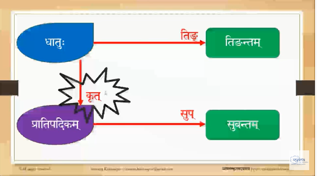

Kridantas
These notes are from the Vyoma Pathasala Kridanta lessons by Dr. Sowmya Krishnapur.
Lesson 1
Context
From the first lesson.
Generally all words (पदम्) are a combination of two components पदम् = प्रकृतिः + प्रत्ययः. Where प्रकृतिः is the root word and प्रत्ययः is the suffix. Both components have their own meanings.
Example: संस्कृतम् = संस्कृत + सुँ
Generally we understand sentences (वाक्य) and words (पद). But to go into a पद we need to know grammar (व्याकरणम्). It is व्याकरण that makes these divisions of प्रकृति and प्रत्यय.
Now संस्कृत can also be separated into two प्रकृति and प्रत्यय.
संस्कृत = सम् सुँ + कृत सुँ
The word कृत can be further divided कृत = कृ + क्त
Generally a पदम् is not just simply one combination of प्रकृति and प्रत्यय. Quite often the प्रकृति can be divided further and further until we get to indivisible components.
Another example: वैदेह्याः (from Vaidehi or Vaidehi's - i.e. 6th and 7th विभक्ति)
वैदेह्याः = वैदेही + ङस्
वैदेही = वैदेह + ङीप्
वैदेह = विदेह + अण्
विदेह = वि सुँ + देह ङसिँ
देह = दिह् अच्
So essentially the word वैदेह्याः is formed using two प्रकृतिः - वि and दिह् and joining them with many प्रत्ययः. Note: I think वि is उपसर्ग. Not sure if that is also a प्रकृतिः.
Generally Sanskrit व्याकरण ज्ञानम् is प्रकृति प्रत्यय ज्ञानम्. The derivation of पदम् from प्रकृति and प्रत्यय is called निष्पत्ति.
There are only two kinds of words in Sanskrit:
- तिङन्तम् (aka क्रिया पदम्)
- सुबन्तम्
The teacher says "Any word we see in Sanskrit is one of these. Anything is 100% covered as one of these." अव्ययानि अपि सुबन्तानि (avyayas are all subanthas).
तिङन्ते धातुः प्रकृतिः तिङ् इति प्रत्ययः अथेव तिङन्तम्। यस्य अन्ते तिङ् प्रत्ययः अस्ति तत् पदम् तिङन्तम् इत्युच्यते।
तिङन्तानि - पठति, पठिष्यति, पठतु etc
सुबन्ते प्रातिपदिकम् प्रकृतिः सुप् इति प्रत्ययः। सुप् अन्ते यस्य तत् सुबन्तम्। अतः सुबन्तम् नाम नाम पदम्। Subanthas are nouns (adjectives, adverbs also I think).
सुबन्तानि - रामः, रामौ, रामाः etc
तिङन्तम् - Verbal forms. It's प्रकृति for this form is called धातु.
सुबन्तम् - Noun forms. It's प्रकृति for this form is called प्रातिपदिकम्।
अतः धातोः तिङ् प्रत्ययस्य योजनेन तिङन्तम् भवति। प्रातिपदिकात् सुप् प्रत्ययस्य योजनेन सुबन्तम् भवति।
धातु examples पठ्, लिख्, वन्द्, नृत् and तिङन्तानि are - पठति, लिखति, वन्दते, नृत्यति
किन्तु धातुः त्रिविधः भवति -
- केवलधातुः - normal simple धातवः like पठ्, लिख्, वन्द्, नृत्। एते केवल धातवः द्विसहस्रं सन्ति (२०००)। धातुपाठे पठिताः २००० धातवः। These are the major root forms of संस्कृतम्. संस्कृते प्रायः सर्वेशाम् अपि शब्दानाम् पदानाम् केवलधातुः एव मूलम्।
- सनाद्यन्तधातुः - चिकीर्ष ति = चिकीर्षति। चिकीर्षति अर्थात् कर्तुम् इच्छति (he wishes to do something). In Sanskrit single words usually cover things like "wishes to read", "wishes to write", "wishes to..." etc. Now चिकीर्षति is not in the list of 2000 केवलधातवः. It is a derived धातु. It can be divided into प्रकृति + प्रत्यय. यः केवल धातुः अस्ति तस्मात् धातोः केचन प्रत्ययाः योज्यन्ते। To the original Dhatus we add some pratyaya's called सनादि। तेषाम् योजनेन पुनः धातु भवति। सनाद्यन्तधातुः = केवलधातुः + णिच्/सन्/यङ्.... Examples: पाठयति, गमयति, नर्तयाति (these are all verbs that show making someone else do the action). These dhatus are formed using णिच् प्रत्यय. Another set - चिकीर्षति (wishes to see), पिपठिष्ति (wishes to read), जिगमिष्ति (wants to go) are formed using सन् प्रत्यय. Yet another set - पुनः पुनः पठति इत्यर्थे पापठयते, पुनः पुनः वन्दते इत्यर्थे वावन्दते - these are formed using यङ् प्रत्यय. There are a series of pratyayas that are used to derive a dhatu from dhatu.
- नामधातुः - नामपदात् धातुः। From a noun we get a verb using some pratyayas. पुत्रीय ति = पुत्रीयति (he who wants to have a son/child). सुबन्तम् + सनादि प्रत्यय (काच्/काम्यच्...).
सुबन्तम् are a combination of two components - प्रातिपदिकम् + सुप्
-
केवलप्रातिपदिकम् - Example: डित्थ + सु = डित्थः. Now डित्थ cannot be broken further. It is a name that does not mean anything. If it is a meaningful name it can be further divided. अव्युत्पन्नानि शब्दस्वरूपाणि - those केवलप्रातिपदिकम् which cannot be further divided. Unlike केवलधातुः there is no list of these words. They are very few.
-
कृदन्तम् - It is a kind of nominal stem. E.g. राम + सु = रामः। धातोः कृत् प्रत्ययस्य योजनेन कृदन्तं भवति।
-
तद्धितान्तम् - Example: दाशरथि + सु = दाशरथिः। तद्धितान्तम् कथं भवति? दशरथ इति सुबन्तम् अस्ति तस्मात् तद्धित इति प्रत्यय भवति तदा प्रातिपदिकम् भवति। तद्धितान्तम् are words that are formed by adding तद्धित प्रत्यय to subanthas. You already have a noun (सुबन्तम्) and add this प्रत्यय to form another noun. Examples: कौन्तेय (from कन्तेः), धनवान् (from धनम्->धनवत्->धनवान्), जनता (from जनानाम्)
-
समासः - Example: सीतापति सु = सीतापतिः. द्वयोः सुबन्तयोः योजनेन समासः भवति। Samasa kind of प्रातिपदिक is derived by joining two subanthas. गज + आनन = गजानन, राज्ञः + पुत्रः = राजपुत्रः, राधा + कृष्णः = राधाकृष्णौ
Summary so far: The diagram below (concisely and excellently) summarizes the lecture so far.
Words in Sanskrit are of two kinds - तिङन्तम् and सुबन्तम्। धातुः तिङन्तस्य मूलम्। Dhatu is the root of thingantham. सुबन्तस्य प्रकृतिः प्रातिपदिकम। The root of a subantham is prathipadhikam.
धातोः तिङ् प्रतययस्य योजनेन तिङन्तम् भवति। प्रातिपदिकात् सुप् प्रत्ययस्य योजनेन सुबन्तम् भवति। Attaching a thing-pratyaya to a dhatu makes it a thingantham. Attaching a sup-pratyaya to a pratipadikam makes it a subantham. These are the two main words in Sanskrit - verb forms and noun forms.

धातोः कृत् प्रतययस्य योजनेन प्रातिपदिकम् भवति। Adding a krit pratyaya converts a dhatu to a pratipadhikam. A dhatu can be converted to another dhatu by adding a sanadhi pratyaya. सुबन्तात् सनादि प्रत्यय योजनेन अपि धातुः भवति। Subantha can be converted to dhatu by adding a sanadhi pratyaya. सुबन्तात् प्रातिपदिकम् भवति तद्धित प्रत्यय योजनेन। ़From subantha adding thadhita pratyaya will make it pratipathikam. Samasa will convert multiple (two or more) to a prathipadhikam.
In the above diagram the red lines achieve inter-conversion. One cannot convert subanta directly to tinganta. You have to first make it a dhatu. Similarly, you can convert a subanta to a pratipadika and then back to subanta to get a new word. A dhatu can be converted to another dhatu using a snadaya pratyaya.
The above covers all words in Sanskrit. Knowing Sanskrit is knowing all the above. There are other things like Sandhi etc but they are just changing the letters. Of the above there are three steps which are very basic: dhatu -> pratipadikam, dhatu -> tingantam and pratipadikam->subantam

This Kridanta lesson series is about converting dhatu -> pratipadikam by adding krt pratyaya (कृत्). This conversion will give 95% of pratipadikas - just an estimate. There is another view - सर्वम् नाम् धातिजमाः - all nouns are from dhatus.
Within कृत् प्रत्ययाः there are two categories. One is the pratyayas directly given by Panini which we call कृत् प्रत्यय. Panini specifically says this is the dhatu and you add this krit pratyaya and you get this pratipadika. There are also another set of pratyayas called उणादि प्रत्यय. They are also added to dhatus to get pratipadikas. Example: गौः is derived from गम् धातु। गच्छति इति गौः। Derived from गम् + डोस्. Such pratyayas (like डोस्) are called उणादि। Is गो उणादि or डोस्? Later the teacher says गो is उणादि.
There are two views regarding उणादि -
- we accept the derivation of उणादि from dhatu then 100%, or at least 99% of pratipadikas will be derived from dhatus.
- those that consider उणादि as something that cannot be split further - meaning they take गो as something that cannot be divided - say that there is a set of केवल प्रातिपतिकः that cannot be split further. Most words come from dhatus and a smaller set come from kevala pratipadikam.
Kridantas are always pratipadikas. We cannot use kridantas directly because pratipadikas cannot be used in sentences. They have to be converted to subanta by adding a सुप् pratyaya to form a padam.
कृदन्ताः
- कृत् इति प्रत्ययः।
- कृत् अन्ते यस्य सः कृदन्तः।
- कृत् प्रत्ययाः धातुभ्यः विहिताः1।
- कृदन्ताः प्रातिपदिकसंज्ञकाः2।
- कृदन्तेभ्यः सुप्-प्रत्ययस्य योजनेन सुबन्ताः भवन्ति।
1विहिताः = ordained, supplied, made 2संज्ञका = named, termed
There are ~140 कृत् प्रत्ययाः in Ashtadyayi. भिन्नेषु अर्थेषु भवन्ति। These pratyayas are added in specific meanings.
Below are examples of what कृत् pratyayas do and how they change meaning. You dont have to remember all of this. The examples are not comprehensive. Only a sample for understanding.
Example 1 : कर्ता (the one who does action): पाचकः, वक्ता, गतवान्
धातवः कृयाम् बोधयति। A dhatu is something that tells you an action. यदा कृत् प्रत्ययः योज्यते तदा कर्ता भवति। पच् धातु (cooking) -> पाचकः (यः पाक कार्यं करोति सः। The one who does cooking.)
यः वदते सः वक्ता। यः गच्छति - भूत कालि गमन कार्यं कृतवान् - सः गतवान्। All these words refer to the person who performed the action. We get that meaning because of the pratyaya.
पच् + अक = पाचकः
Example 2: कर्म the object of action - पठितः, खाद्यम्
The word पठित (पठितः, पठिता, पठितम्) says what was read (not who read).
किम् पठितम्? (What was read?) कृदन्ताः पठिताः। व्याकरणम् पठितम्।
पठित्वान् is the person who did the action of reading whereas पठित refers to the object. The change in meaning is because of the pratyaya.
Example 3: भावः (क्रिया) action - कृतिः, गतिः, बुभुक्षा
Pratyayas can be used to convert a dhatu to give you the meaning of कर्ता (does), कर्म (object) and also क्रिया (the action).
कृतिः = doing गतिः = going बुभुक्षा = to desire to eat
Example 4: क्रियाणाम् परस्परसम्बन्धः - the inter-relationship between क्रिया
कृत्वा = having done something you move on to another क्रिया
कर्तुम् = gives the purpose कर्तुम गच्छति (goes for doing)
Example 5: पौनः पुन्यम्
कारं कारम् = doing it again and again
दर्शं दर्शम् = seeing again and again
Kridantas are nouns that still have a portion of an action. Not all krit pratyayas are added to all dhatus. Some are general and applied to all dhatus and some are applied to specific dhatus.
These are the major pratyayas we will be studying in the course. We will study about 25 that are common and important. Most of these are general and can be applied to all dhatus.
| कृत्प्रत्ययविभागः (अर्थमनुसृत्य) | |||
|---|---|---|---|
| कर्तरि | भावे | भूते | विध्यादिषु |
| ण्वुल् | ल्युट् | क्तवतु | अनीयर् |
| तृच् | क्तिन् | क्त | तव्य |
| शतृ / शानच् | अ | यत् / ण्यत् | |
| क्किप् | घञ् | ||
| अच् |
| कृदनताव्ययानि | उपपदकृतन्दाः |
|---|---|
| क्तवा-ल्यप् | अण |
| तुमुन | क |
| णमुल् | ट |
| ड | |
| खश् |
प्रत्ययः १ - ल्युट् (अन)
ल्युट् इति प्रत्ययः रूपेतु अन इति श्रुयते।
Here are some example usages of this प्रत्यय
All the words in red color are kridantas. Specifically they are ल्यटन्ताः or words ending in ल्युट्.
पूर्वं रामतपोवनादिगमनं हत्वा मृगं काञ्चनम्
वैदेहीहरणं जटायुमरणं सुग्रीवसम्भाषणम्।
वालीनिग्रहणं समुद्रतरणं लङ्कापुरीदाहनं
पश्चाद्रावणकुम्भकर्णहननम् एतद्धि रामायणम्॥ Listen here
दाहनम् - to make something burn
करणं मधुरं तरणं मधुरं हरणं मधुरं रमणं मधुरम्।
वमितं मधुरं शमितं मधुरं मधुराधिपतेरखिलं मधुरम्॥ Listen here
आदौ देवकिदेविगर्भजननम् गोपीगृहेवर्धनम्
मायापूतनिजीवित अपहरणम् गोवर्धन उद्धारणम्।
कंसच्छेदनकौरवादि (छेदनम्) हननम् कुन्तीसुत आपालनम्
एतद्भागवतं पुराणकथितं श्रीकृष्णलिलामृतम्॥ Listen here
Valmiki Ramayana third sarga has a lot of ल्युट् (अन) kridantas.
Why are the pratyayas named the way they are? Pannini tries to add some identifying letters into each pratyaya. So the pratyaya will have its own letters and some other letters for identification. They help us in doing many things. That is not strictly in the purview of this class. Can email teacher (sowmya dot krishnapur at gmail).
Lesson 2
अद्य वयम ल्यट् प्रत्ययस्य रूपाणि तेषाम् प्रयोगाणाम च अभ्यासम् कुर्मः।
Recap of previous lesson:
What all things can krit pratyayas convey meaning of - कर्ता (doer), कर्म (object), करणम् (the instrument), क्रिया (the action), कालः (the tense), पौन पुन्यम् (repeatedy doing something), विधिः (the injunction to do something) and many more.
ल्युट् प्रत्ययः गमनम्, पठनम्, जननम्, मरणम्, तरणम्, करणम्...
यत्र यत्र अयं प्रत्ययः भवति तत्र अन्ते अनम् अथवा अणम् इति श्रूयते। अयं भावार्थकः प्रत्ययः इत्युच्छते अर्थात क्रियां बोधयति। Note that the above examples are subantas the kridantas are like गमन, पठन etc.
This pratyaya is a general pratyaya which is used in the sense of action. The easy way of identifying this pratyaya is by looking at the अनम्/अणम् at the end of it. But not everywhere you see a अनम्/अणम् that is a ल्युट् प्रत्यय.
षोडशोपचार-पूजायाः अङ्गानि - यतः भगवतः पूजा क्रियते तत्र षोडश-अङ्गानि भवति। When we are worshipping the lord we have 16 steps. They are all different actions. किम् किम् भवति षोडशोपचारे -
- ध्यानम् - we pray to the deity
- आवाहनम् - we bring the deity into the idol or kalasha
- आसनम् - sitting. आसनप्रदानम् we are giving him a seat
- पाद्यप्रदानम् - पादस्य क्षालनार्थं जलम्
- अर्घ्यप्रदानम् - अर्घ्यम् is हस्त प्रक्षालनार्थं जलम् प्रदानम्
- आचमनीयप्रदानम् - पातुम जलम् आचमनीयमित्युच्छते
- स्नानम्
- वस्त्रधारणम्
- यज्ञोपवीतधारणम्
- गन्धलेपनम् - लिपनम् is to anoint. गन्ध is fragrant
- पुष्पार्चनम् - पुष्पैः अर्चनम् (worshipping with flowers)
- धूपाराधनम् - worshipping (आराधनम्) with धूपा
- दीपदर्शनम् - showing deepam
- निवेदनम् - giving नैवेद्यम् (action of offering food)
- नीराजनम् - aarati
- प्रार्थनम् - praying
1-6 above are kridantas but a different kind. After 6 are ल्यट् kridantas.
कुत्र अनम्? कुत्र अणम्?
णत्वं कुत्र भवति? In grammatiचal parlance this is called णत्व. Here is a general rule that works most of the time-
नकारात् पूर्वम् -
-
रेफः/ ऋकारः / षकारः अस्ति चेत् णत्वम् भवति। Example: In तरनम् there is र् before न्। In this rule you dont have to worry if there are any स्वाराः (vowels) in betwee. Swaras will not obstruct णत्व. That word becomes तरणम्. Similarly पेषनम् becomes पेषणम्
-
Second rule: If there is a consonent between the रेफः/ ऋकारः / षकारः and नकार. Examples: क्रयनम्, बृंहनम्, क्षेपनम् - If the व्यञ्जनानि (consonants) are one of कवर्ग-पवर्ग-ह्-य्-व्-र् then णत्वम् happens. All three examples qualify and they become क्रयणम्, बृंहणम्, and क्षेपणम्
-
If there are other consonants between रेफः/ ऋकारः / षकारः and नकार then णत्व does not happen. Examples: ग्रथनम्, अर्चनम्, गृञ्जनम्, क्षालनम्, रटनम्, क्रीडनम्, मूर्च्छनम्, क्रोशनम्
The above is the most general rule for णत्व. There are other rules also. This rule holds for simple cases.
वृक्षेन / वृक्षेण ? वृक्षेण
ऋृषबेन / ऋृषबेण ? ऋृषबेन
Both above are not ending in अनम् so this rule does not apply. A different rule applies. See Sandhi notes "Word Internal Sandhi rule".
ल्युट्-प्रत्यत्यान्तस्य रूपाणि १
How do we get the forms of ल्युट् प्रत्यय from the dhatu? For most dhatus adding अन् will give a ल्युट् प्रत्यय.
| गणित-क्रियाः | गति-क्रियाः |
|---|---|
| गण् - गणनम् (counting) | गम् - गमनम् (going) |
| सङ्कल् - सङ्कलनम् (addition) | चल् - चलनम् (moving) |
| व्यवकल् - व्यवकलनम् (subtraction) | धाव् - धावनम् (running) |
| गुण् - गुणनम् (multiplication) | भ्रम् - भ्रनणम् (rotating) |
| विभज् - विभजनम् (division) | कम्प् - कम्पनम् (shaking) |
These words only give क्रिया and there is no reference to any काला.
गमनम् अस्ति। - Present tense
गमनम् भविष्यति - Will go - Future tense
गमनम् आसीत् - Was going. - Past tense.
Some krit pratyayas do convey tense. E.g. गतवान्. This ल्युट् pratyaya does not convey tense.
ल्युट्-प्रत्यत्यान्तस्य रूपाणि २
| इकारान्ताः/ईकारान्ताः | उकारान्ताः/ऊकारान्ताः |
|---|---|
| चि - चयनम् (collect/pluck) | प्लु - प्लवनम् (jump) |
| स्मि - स्मयनम् (smile) | स्तु - स्तवनम् (praise) |
| नी - नयनम् (take/carry) | हु - हवनम् (homam/havan, perform a sacrifice/ritual) |
| शी - शयनम् (sleep) | भू - भवनम् (existance) |
| डी - डयनम् (fly) | पू - पवनम् (clean, purify) |
If the words ends in इकारान्ताः/ईकारान्ताः we add अयनम्
If the words ends in उकारान्ताः/ऊकारान्ताः we add अवनम्
ल्युट् प्रत्यत्यान्तस्य रूपाणि - ३
उपान्त्ये - last but one letter
If the ह्रस्वः (small vowel) इकारः or उकारः is the last but one letter then
- इ becomes ए
- उ becomes ओ
Note: Short vowel is ह्रस्वम् and long vowel is धीर्गम्
| ह्रस्वः इकारः उपान्त्यः | ह्रस्वः उकारः उपान्त्यः |
|---|---|
| लिख् - लेखनम् (write) | मुद् - मोदनम् (rejoice) |
| क्षिप् - क्षेपनम् (throw) | स्फुट् - सफोटनम् (burst) |
| मिल् - मेलनम् (meet) | घुष् - घोषणम् (announce) |
| छिद् - छेदनम् (cut) | रुद् - रोदनम् (cry) |
| पिष् - पेषणम् (pound, in Tamizh araikarathu) | युज् - योजनम् (join) |
| त्रुट् - त्रोटनम् (plucking or cutting of fruits) | नुद् - नोदनम् (पुसह) |
- फलानां त्रोटनम्।
- यानस्य नोदनम्।
Question from student: Are words that are formed by using ल्युट् all नपुंसकलिंग? Answer is YES.
ल्युट् प्रत्यत्यान्तस्य रूपाणि - ४
- यदि ऋकारः अन्ते अस्ति तर्हि अन् इति भवति (also apply णत्वम्)
- यदि ऋकारः उपान्त्यः अस्ति तर्हि अर् इति भवति
| ऋकारान्ताः/ॠकारान्ताः | ह्रस्वः ऋकारः उपान्त्यः |
|---|---|
| कृ - करणम् (doing) | नृत् - नर्तनम् (dance) |
| भृ - भरणम् (bear, nourish) | वृध् - वर्धनम् (grow) |
| वृ - वरणम् (choose) | भृज् - भर्जनम् (frying - chips, vada etc) |
| मृ - मरणम् (die) | वृष् - वर्षणम् (raining) |
| तॄ - तरणम् (swim, cross over) | तृप् - तर्पणम् (pleasing, satisfying ) |
विषेषः - मृज् - मार्जनम् (cleaning) is an exception to the above.
आवृत् - आवर्तनम् (revise)
One last form
If the धातु is ए/ऐ/ओ/औ-कारान्तः then ए/ऐ becomes अकारान्तः
द्यै - द्यानम्
गै - गानम्
Sloka
Bhakti is of nine kinds
श्रवणं कीर्तनं विष्णोः स्मरणं पादसेवनम्।
अर्चनं वन्दनं दास्यं सख्यम् आत्मनिवेदनम्॥
| Word | Meaning | Word | Meaning |
|---|---|---|---|
| श्रू - श्रवणम् | listening (i.e. listening to the deeds of Vishnu) | कीर्त् - कीर्तनं | chanting (the name of Vishnu) |
| स्मृ - स्मरणम् | remembering (Vishnu) | सिव् - सेवनम् | serving (पादसेवनम् - serving the feet of the lord) |
| अर्च् - अर्चनम् | worshipping | वन्द् - वन्दनम् | bowing, saluting |
| दास्यम् | feeling of complete surrender (this is not ल्युट्। It is a kridanta we will see later) | सख्यम् | having a feeling of friendship |
| नि + विद् - निवेदनम् | आत्मनिवेदनम् - offering oneself to the lord completely |
दासस्य भावः दास्यम् - तद्धितान्त कृदन्तः
सख्यु भावः सख्यम् - तद्धितान्त कृदन्तः
Summary

Student question: Why do we call it ल्युट् when the sound added is अन्/अण्?
The लकार and टकार in ल्युट् has its own purposes of modifying the swara etc of the dhatu. Why we get अन् is because where every यु occurs it is replaced by अन् as per a Panini sutra called युवोरनाकौ.
Lesson 3
कृदन्ताः - The term used to refer to a group of प्रत्ययाः. It is not a प्रत्यय by it self but refers to a group.
कृत् is a name for a set of pratyayas. There are about 140 pratyayas that fall under this group. They are always added to dhatus.
Start at 4:28